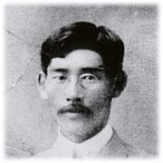

| ＜台灣天文研究的始祖＞一戶直藏 | |||
生平簡介 山頂夢想 未來科學 臺灣尋址 資料來源 回到臺灣 天文歷史 |
 臺灣天文研究的始祖，恐怕要從一戶直藏先生（1878～1920）談起了。雖然說他並不是臺灣人，但是他對於臺灣的天文學發展有舉足輕重的貢獻。 一戶直藏先生被認為是二次世界大戰後最重要的日本天文學家，當時被譽為日本天文史上閃耀的一顆星。1903年畢業於東京帝國大學星學科（也就是現在的天文學科）後，擔任了東京天文臺助手（相當於助理研究員），並於1905年自費到當時擁有世界上最大望遠鏡（40吋）的美國芝加哥大學附屬Yerkes天文臺留學，研究領域為天體物理學、變星觀測。 由於留美期間見到了美國正在逐一建設更大型的望遠鏡（60吋、100吋、200吋），認為日本也不能落於人後，因此回國後擔任東京帝國大學理學部講師兼東京天文臺觀測主任期間，開始為了日本國內的天文臺建設而奔走。他提出了諸多項的天文臺建設計劃，其中並包括了1911年所提出的在臺灣玉山建設天文臺的構想。 |
||